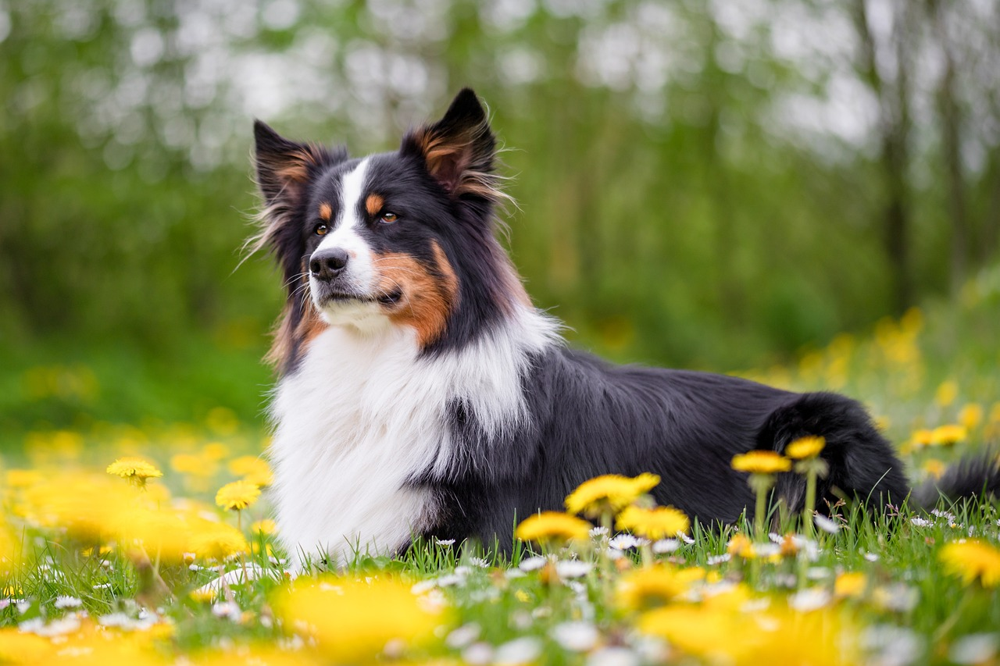

Les loisirs
Tout ce qu'il y'a à savoir sur les distractions de votre amis


.png)
Nos amis les bêtes, chiens ou chats, ont un grand besoin de se divertir. Et oui, tout comme nous ils sont soumis au stresse, l'impatience et surtout l'ennuis. En plus, c'est un bon moyen de les motiver à bouger un peu leur corps ! Même si vous êtes occupé, que vous avez peu de temps à leur accorder la semaine, il existe des possibilités pour les divertir sans que vous ayez besoin d'être sur place. On vous détail tout juste en dessous.

Les chats sont par nature des animaux très indépendants, curieux et
amateurs de nouvelles aventures. Beaucoup de gens pensent que les
chats ont besoin d'environnements ouverts et de liberté pour être
heureux et garder leur instinct sauvage. Naturellement, la solution
qui saute aux yeux afin de lui éviter l'ennuis et l'innactivité, est
de lui laisser une possibilité de sortir. Cependant, certains
"parents" de chats se refusent à cette possibilité par peur ou
simplement par impossibilité.
N'ayez crainte, votre ami ne s'ennuira pas pour autant, en intérieur
des accessoires peuvent lui permettre de s'amuser tout autant. Un
arbre à chat par exemple est un bon moyen pour lui de faire ses
griffes, monter et descendre, se cacher, enfin tout ça sans abîmer
votre précieux canapé. En supplément, il existe une multitude de
jeux, du plus perfectionné à un simple bout de ficelle qui pend tout
ça pour son plus grand plaisir.
.png)
Pour distraire nos meilleurs amis, les plus petits mais aussi les plus grands, il est possible de leur donner des puzzles alimentaires, des exercices aérobiques, des jeux interactifs, des promenades quotidiennes et des sorties avec d’autres chiens pour lui permettre de se dépenser. Il est plus difficile d'occuper un chien en intérieur quand il est seul. Lorsque vous vous absentez, vous pouvez offrir à votre chien des distractions sécuritaires comme un jouet de type KONG que vous aurez rempli d’eau, de bouillon ou de croquettes détrempées, puis congelé. Il est important d'habituer votre chien à rester calme lorsque vous partez et que vous revenez, et de ne pas l’exciter durant ces moments-là.